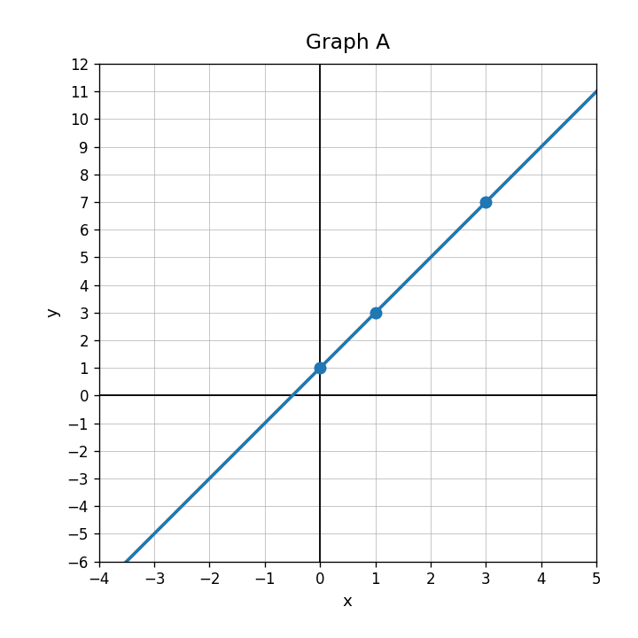
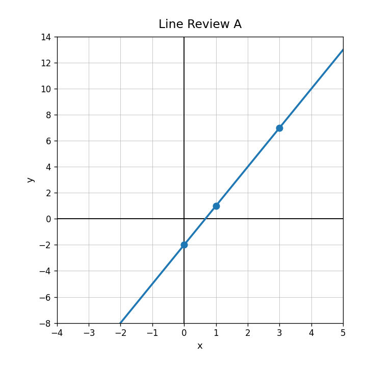
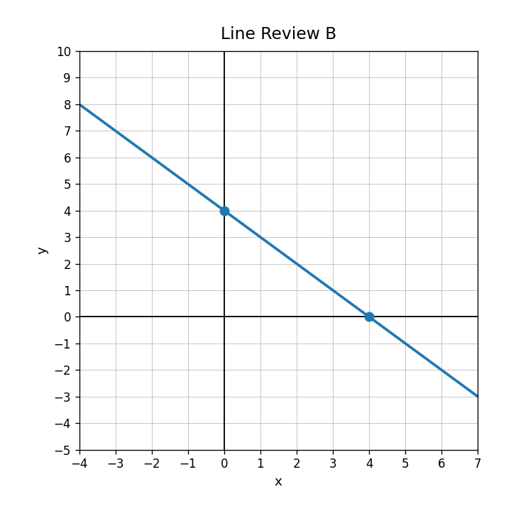
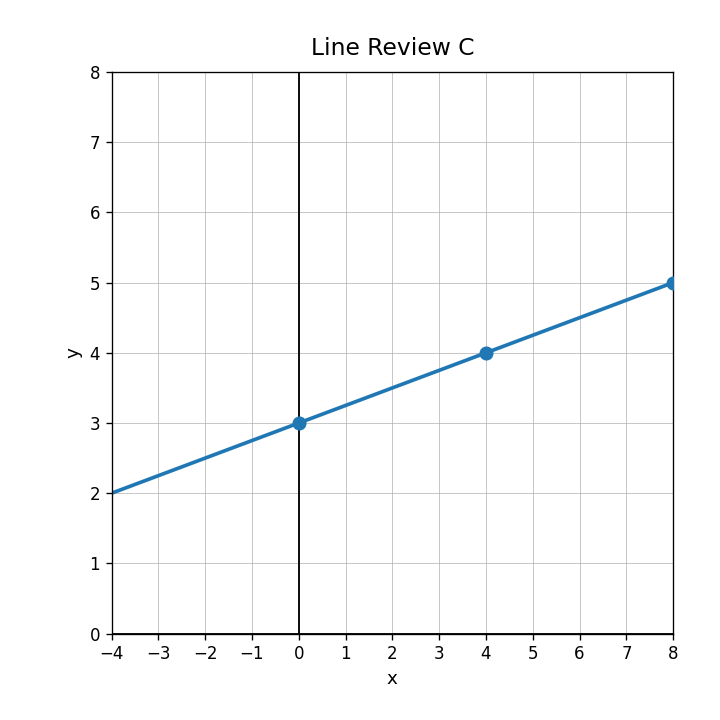
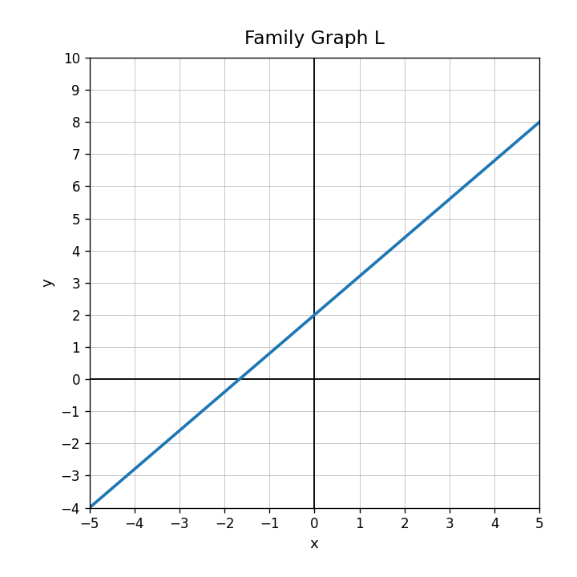
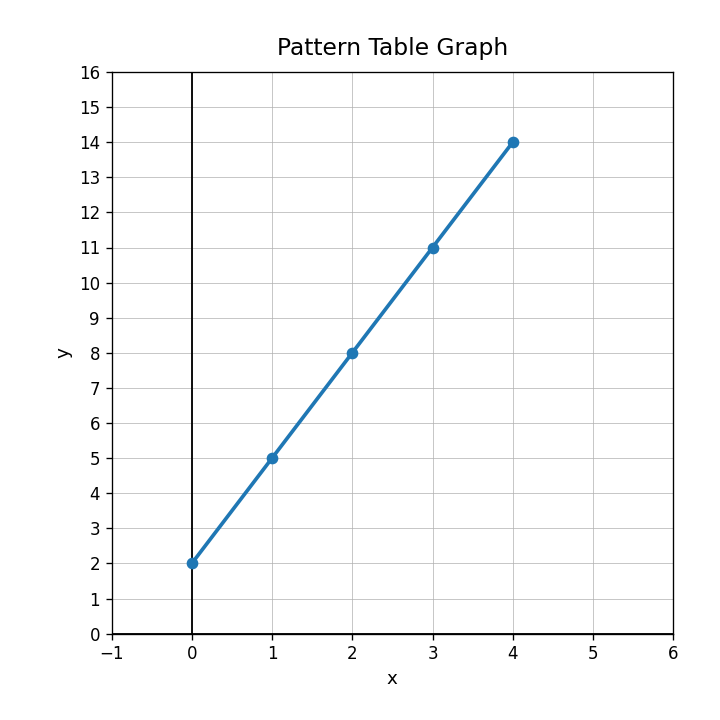

Use Graph A. Write the slope and the $y$-intercept. Then write the equation in the form $y=mx+b$.

A gym charges $25 to join and $9 each month. Which number is the starting value? Which number is the rate of change?
Write an equation for the relationship shown in the table.
| $x$ | 0 | 1 | 2 | 3 |
|---|---|---|---|---|
| $y$ | 4 | 7 | 10 | 13 |
A taxi charges a $5 starting fee plus $3 per mile. Let $C$ be the total cost for $m$ miles. Write an equation.
Use the graph. Identify the $y$-intercept.

For $y=-x+6$, identify the slope and the $y$-intercept.
Use the graph. Is the line increasing or decreasing?

Complete the sentence: The $y$-intercept is where the graph crosses the __________ axis.
Graph the points from the table and describe the pattern.
| $x$ | 0 | 1 | 2 | 3 |
|---|---|---|---|---|
| $y$ | 2 | 4 | 6 | 8 |
Does the graph match $y=\frac{1}{4}x+3$? Explain using slope and intercept evidence.

A student graphs $y=4x-2$ by starting at $(4,0)$ and moving down 2. Identify the error and describe the correct graphing process.
Create a linear function whose graph is increasing and crosses the $y$-axis at $-3$. List three points that should appear on your graph.
Identify the function family shown.

Classify $y=x^2+5$ as linear, quadratic, absolute value, or exponential.
Use the table graph. Does the pattern appear linear? Explain briefly.

Which equation represents a linear family: $y=3x+8$, $y=x^2-1$, or $y=2^x$? Explain how you know.